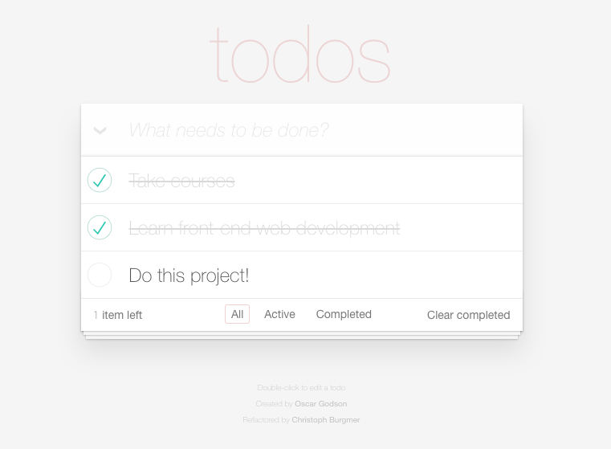

Projet 8 - Reprenez et améliorez un projet existant
Cet avant-dernier projet de la formation "Développeur Front End" consite à reprendre un projet existant.

Pré-requis
npm install
Démarrer le projet
npm start
L'application devrait s'ouvrir automatiquement dans le navigateur. Sinon, elle devrait être accssible à l'adresse http://localhost:8080
Etape 1 : Corrigez les bugs
Plusieurs erreurs s'étaient insérées dans le code et ont été corrigées.
- Erreur de typographie dans controller.js
Ligne 95 du fichier controller.js: la fonction Controller.prototype.addItem comportait un "d" en trop.

- Absence d'un id unique dans store.js
La fonction save générait un nouvel id sous forme d'une suite de chiffres. Cette génération d'id n'était pas assez unique.
Une librairie a été utilisée afin de générer un UUID (Universally Unique Identifer).
Plusieurs modifications ont été faites pour fixer ce bug.
- Suppression du code générant l'id
Suppression des lignes 83 à 90 dans store.js

- Ajout du script de la librairie UUIDV4
Dans index.html ajout du script

- Ajout de la fonction générant l'id
Dans store.js ajout de la fonction permettant de générer un uuid

- Suppression des parseInt
Suppression de la ligne 55 dans models.js, de la ligne 138 dans view.js et de la ligne 107 dans store.js
- Erreur 404
Une erreur 404 était générée dans la console. La ligne 48 dans index.html a été supprimée
- Bug click toggle-all
Le click sur le "toggle-all" ne fonctionnait pas car le label for ne renvoyait à aucun id. Correction des lignes 17 à 19 dans index.html

-
Refactorisation
Méthode trim()
Dans la fonction title, refactorisation avec la méthode trim() à la ligne 124 de controller.js

Suppression forEach()
La boucle qui avait été créée, à la ligne 159 de controller.js ne faisait qu'alourdir le code. L'insertion d'un console.log() permet de faire la même chose.

Suppression de l'assignation de la taille d'un tableau à une variable
Cela ne sert à rien d'assigner la taille d'un tableau à une variable. Le code a donc été refactorisé. Les lignes 61 et 64 de template.js ont été corrigées.;
Insertion de Object.assign
Refactorisation des lignes 87 à 89 de store.js en insérant Object.assign afin d'insérer toutes les propriétés dans un seul objet.

Méthode filter()
Dans Store.prototype.remove, refactorisation avec la méthode filter() à la ligne 118 dans store.js
Etape 2: où sont les tests ?!
Plusieurs tests ont été réalisés et se retrouvent dans ControllerSpec.js
9 tests effectués et 1 qui n'a pas été demandé mais qui pourrait être effectué.
- Pour exécuter les tests
npm test
La page de test devrait s'ouvrir automatiquement. Sinon, elle devrait être accessible à l'adresse http://localhost:8081/test/SpecRunner.html
-
Un Test beforeEach - ligne 62
Test de la fonction beforeEach

-
Cinq Tests describe('routing') - ligne 92 et suivantes
3.1 Test de la fonction describe('routing') pour toutes les entrées actives
3.2 Test de la fonction describe('routing') pour toutes les entrées complétées

3.3 Test de la fonction describe('routing') pour tous les filtres par défaut
3.4 Test de la fonction describe('routing') pour les filtres actifs
3.5 Test manquant de la **fonction describe('routing') pour les filtres complétés

-
Deux Tests pour describe('toggle_all') - lignes 178 et suivantes
1. Test de la fonction describe('toggle all') pour tous les todos complétés

2. Test de la fonction describe('toggle all') pour la mise à jour

-
Un Test pour describe('new todo') - ligne 219
Test de la fonction describe('new todo') pour ajouter un nouveau todo
-
Un Test pour describe('element removal') - ligne 269
Test de la fonction describe('element removal') pour modifier une entrée

Etape 3: optimisez la performance
Un audit de performance a été effectué tout en scalant par rapport au site concurrent.
Etape 4: améliorez le projet
Plusieurs documentations sont demandés afin d'améliorer le projet: